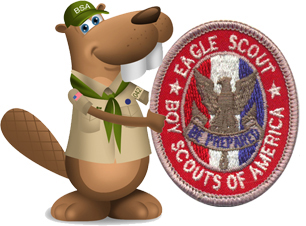

Eagle Rank

A Venturer or Sea Scout must have achieved First Class rank as a Scouts BSA member, or as a Lone Scout, in order to work on and earn Star, Life, and Eagle Rank requirements. For Venturers working on Scouts BSA requirements, replace "troop" with "crew" and "Scoutmaster" with "Crew Advisor." For Sea Scouts working on Scouts BSA requirements, replace "troop" with "ship" and "Scoutmaster" with "Skipper."
Alternate requirements for the Eagle Scout rank are available for Scouts with physical or mental disabilities if they meet the criteria listed in the Scouts BSA Requirements book.
Eagle Rank Requirements
1.
Be active in your troop for at least six months as a Life Scout.
2.
As a Life Scout, demonstrate Scout Spirit by living the Scout Oath and Scout Law. Tell how you have done your duty to God, how you have lived the Scout Oath and Scout Law in your everyday life, and how your understanding of the Scout Oath and Scout Law will guide your life in the future. List on your Eagle Scout Rank Application the names of individuals who know you personally and would be willing to provide a recommendation on your behalf, including parents/guardians, religious (if not affiliated with an organized religion, then the parent or guardian provides this reference), educational, employer (if employed), and two other references.
3.
Earn a total of 21 merit badges (10 more than required for the Life rank), including these 13 merit badges: Any additional merit badge(s) earned in these categories may be counted as one of your eight optional merit badges used to make your total of 21.
Eagle-Required Merit Badges
First Aid
Citizenship in the Community
Citizenship in the Nation
Citizenship in the World
Communication
Cooking
Personal Fitness
Emergency Preparedness OR Lifesaving
Environmental Science OR Sustainability
Personal Management
Swimming OR Hiking OR Cycling
Camping
Family Life
You must choose only one of the merit badges listed in the following categories; 1) Emergency Preparedness OR Lifesaving, 2) Environmental Science OR Sustainability, 3) Swimming OR Hiking OR Cycling. Any additional merit badge(s) earned in these categories may be counted as one of your optional merit badges.
4.
While a Life Scout, serve actively in your troop for six months in one or more of the following positions of responsibility:
Scout troop. Patrol leader, assistant senior patrol leader, senior patrol leader, troop guide, Order of the Arrow troop representative, den chief, scribe, librarian, historian, quartermaster, junior assistant Scoutmaster, chaplain aide, instructor, webmaster, or outdoor ethics guide. Assistant patrol leader and bugler are not approved positions of responsibility for the Eagle Scout rank. Likewise, a Scoutmaster-approved leadership project shall not be used in lieu of serving in a position of responsibility.
Venturing crew. President, vice president, secretary, treasurer, den chief, historian, guide, quartermaster, chaplain aide, or outdoor ethics guide.
Sea Scout ship. Boatswain, boatswain's mate, purser, yeoman, storekeeper, crew leader, media specialist, specialist, den chief, or chaplain aide.
Lone Scout. Leadership responsibility in your school, religious organization, club, or elsewhere in your community.
5.
While a Life Scout, plan, develop, and give leadership to others in a service project helpful to any religious institution, any school, or your community. (The project must benefit an organization other than the Boy Scouts of America.) A project proposal must be approved by the organization benefiting from the effort, your Scoutmaster and unit committee, and the council or district before you start. You must use the Eagle Scout Service Project Workbook, BSA publication No. 512-927, in meeting this requirement. (To learn more about the Eagle Scout service project, see the Guide to Advancement topics 9.0.2.0 through 9.0.2.16..
6.
While a Life Scout, participate in a Scoutmaster conference.
In preparation for your board of review, prepare and attach to your Eagle Scout Rank Application a statement of your ambitions and life purpose and a listing of positions held in your religious institution, school, camp, community, or other organizations, during which you demonstrated leadership skills. Include honors and awards received during this service.
7.
Successfully complete your board of review for the Eagle Scout rank. (This requirement may be met after age 18, in accordance with Guide to Advancement topic 8.0.3.1..
APPEALS AND EXTENSIONS
If a Scout believes all requirements for the Eagle Scout rank have been completed but a board of review is denied, the Scout may request a board of review under disputed circumstances in accordance with Guide to Advancement topic 8.0.3.2..
If the board of review does not approve the Scout’s advancement, the decision may be appealed in accordance with Guide to Advancement topic 8.0.4.0..
A Scout who foresees that, due to no fault or choice of their own, it will not be possible to complete the Eagle Scout rank requirements before age 18 may apply for a limited time extension in accordance with Guide to Advancement topic 9.0.4.0.. These are rarely granted and reserved only for work on Eagle
AGE REQUIREMENT ELIGIBILITY
Merit badges, badges of rank, and Eagle Palms may be earned by a registered Scout or a qualified Venturer or Sea Scout. Scouts may earn these awards until their 18th birthday. Any Venturer or Sea Scout who has achieved the First Class rank as a Scout in a troop or as a Lone Scout may continue working up to their 18th birthday toward the Star, Life, and Eagle Scout ranks and Eagle Palms.
An Eagle Scout board of review may occur, without special approval, within three months after the 18th birthday. Local councils must preapprove those held three to six months afterward. To initiate approval, the candidate, the candidate’s parent or guardian, the unit leader, or a unit committee member attaches to the application a statement explaining the delay. Consult the Guide to Advancement, topic 8.0.3.1., in the case where a board of review is to be conducted more than six months after a candidate’s 18th birthday.
If you have a permanent physical or mental disability, or a disability expected to last more than two years or beyond age 18, you may become an Eagle Scout by qualifying for as many required merit badges as you can and qualifying for alternative merit badges for the rest. If you seek to become an Eagle Scout under this procedure, you must submit a special application to your local council service center. Your application must be approved by your council advancement committee before you can work on alternative merit badges.
A Scout, Venturer, or Sea Scout with a disability may also qualify to work toward rank advancement after reaching 18 years of age if the guidelines outlined in section 10 of the Guide to Advancement are met.